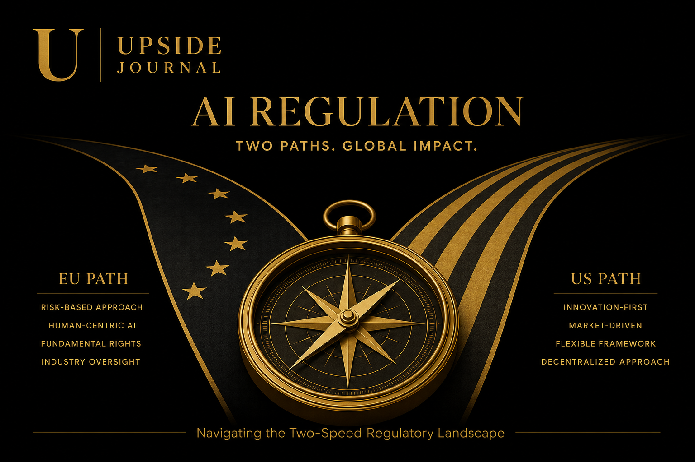

If you're building with AI in 2026, you're now operating under two very different rule books — and they're moving in opposite directions.
On one side of the Atlantic, the European Union is enforcing the most comprehensive AI legislation ever written. On the other, Washington is actively dismantling state-level AI laws and betting everything on deregulation. For tech founders — especially those operating across borders — this isn't an abstract policy debate. It's the difference between shipping your product and getting sued.
Here's what you actually need to know.
The Two-Speed Problem
Europe: Regulate first, innovate within the rules.
The EU AI Act — the world's first comprehensive AI law — has been rolling out in phases since February 2025. The next major deadline lands on 2 August 2026, when requirements for high-risk AI systems take full effect. That means if your product touches biometric identification, critical infrastructure, education, employment, credit scoring, or law enforcement in the EU, you have roughly two months to comply.
The penalties are not academic. Non-compliance carries fines of up to €35 million or 7% of global revenue, whichever is higher. For a Series A startup doing €5 million in revenue, that's an existential risk.
However — and this is important — the European Parliament recently voted to delay key compliance deadlines, pushing high-risk AI requirements to December 2027 and sector-specific obligations to August 2028. The delay is partly attributed to pressure from tech companies and, notably, the Trump Administration. But the delay only takes legal effect if the Council of the European Union reaches a political agreement before June — which, as of this writing, remains uncertain.
Translation for founders: Do not assume the delay is guaranteed. Build for the August 2026 deadline. If it shifts, you're ahead. If it doesn't, you're compliant.
America: Deregulate, dominate, and dare states to interfere.
Washington's approach is the mirror image. In January 2025, President Trump signed Executive Order 14179, revoking the Biden-era AI Executive Order and signalling a clear priority: remove barriers to American AI dominance.
Then, in December 2025, a second executive order went further — establishing an AI Litigation Task Force within the Department of Justice, specifically tasked with challenging state-level AI laws that the administration considers overly burdensome. The order directs the Secretary of Commerce to evaluate and flag state laws that "require AI models to alter their truthful outputs" or compel developers to disclose information in ways that could violate the First Amendment.
The message is unmistakable: the federal government wants a "minimally burdensome national policy framework" and is willing to go to court to prevent states from creating a patchwork of local AI regulations.

What This Means for Founders
If you're a US-only startup, the regulatory environment just got significantly easier — at the federal level. But "easier" comes with a caveat: state laws haven't disappeared yet, and the litigation process to challenge them will take time. California's SB 1047 (the AI safety bill vetoed by Governor Newsom in 2024) may be dead, but similar bills are moving in New York, Illinois, and Colorado.
If you're building for global markets — which, if you're reading this, you probably should be — you're now navigating a genuine regulatory divergence:
| United States | European Union | |
|---|---|---|
| Philosophy | Deregulation + innovation | Risk-based regulation |
| Key deadline | No federal AI compliance deadline | 2 August 2026 (high-risk) |
| Penalties | Varies by state | Up to €35M or 7% revenue |
| Trend | Removing restrictions | Enforcing (with potential delays) |
| Founder risk | State-level patchwork | Cross-border compliance cost |
The Smart Play
The founders who will navigate this best aren't choosing sides. They're building compliance as a competitive advantage.
Here's the framework:
1. Build for the strictest standard. If your AI system complies with the EU AI Act, it automatically exceeds every current US requirement. One compliance framework, two markets unlocked.
2. Document everything now. Both the EU AI Act and emerging US state laws emphasise transparency — model documentation, risk assessments, and human oversight protocols. Start documenting your AI decision-making processes today, regardless of which jurisdiction you're targeting.
3. Watch the August deadline. If the EU Council doesn't formalise the delay before June, the original August 2026 deadline stands. High-risk AI operators who placed systems on the EU market before that date may be grandfathered in. After that date, new compliance obligations apply fully.
4. Treat policy literacy as a founder skill. The regulatory landscape is shifting faster than most product roadmaps. Founders who understand policy will out-manoeuvre those who outsource it to lawyers after the fact.
The founders who will navigate this best aren't choosing sides. They're building compliance as a competitive advantage.
At Concorde App, we've been tracking how these regulatory shifts affect the enterprise AI stack — particularly for B2B platforms operating across borders. The companies arriving at Cannes Lions next month with a clear compliance story will have a material advantage over those still treating regulation as someone else's problem.
The rosé is optional. The compliance isn't.
Watch: Global AI Regulation Guide — Jupita AI. A concise breakdown of the evolving global AI regulatory landscape.
Related: Read The Enterprise AI Stack Nobody Is Talking About — What Cannes Brands Are Missing for our take on the infrastructure that turns AI from a novelty into an operating system.